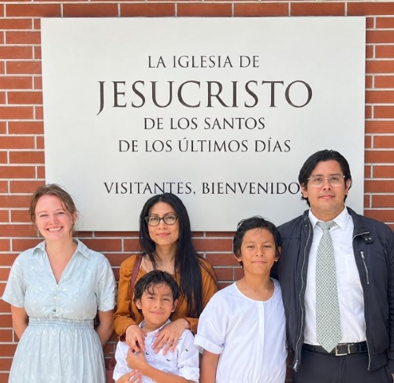

Jorge Alberto Ayala Sanchez | WDD 130

Hello! My name is Jorge Sanchez, and I’m from El Salvador. I enjoy spending time with my family, learning new things, and finding ways to improve myself. I have experience in administration, accounting, and property management, and I’m currently studying at BYU-Pathway Worldwide. I’m excited to learn about web design and development because it’s something new for me, and I’m looking forward to discovering what I can create with these skills. I know I still have a lot to learn, but I’m quite excited to see where this journey takes me!